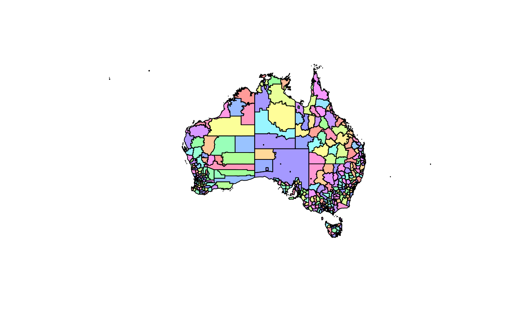
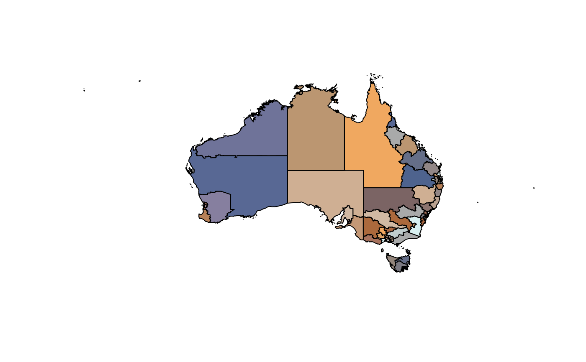

These data sets are simplifications of the formal statistical areas and regions published by the ABS in 2016.
abs_ste
Simple features data frame with
Area name
Geometry column in 'sfc' format
Each layer was read from the source file with 'sf' package and attributes were removed, leaving a single 'NAME' column from the year-specific column names. The geometry has been simplified using 'rmapshaper::ms_simplify' with default arguments (0.05 detail).
Several layers are not included from the total available.
The entire nation layer 'AUST' is not included as it is the union of the State and Territory layer.
Statistical Areas Level 1 is not included as it is very large (56Mb after simplification).
The mesh blocks are not included, nor Greater Capital City Statistical Areas, Indigenous Regions, Remoteness Structure, Statistical Areas (L2, L3, L4), State Electoral Divisions. See 'ozmaps.data' for these.
Commonwealth Electoral Divisions
Local Goverment Areas
State and Territory
The script to create the data set set: data-raw/abs-inbuilt.R
ozmap("abs_ste")